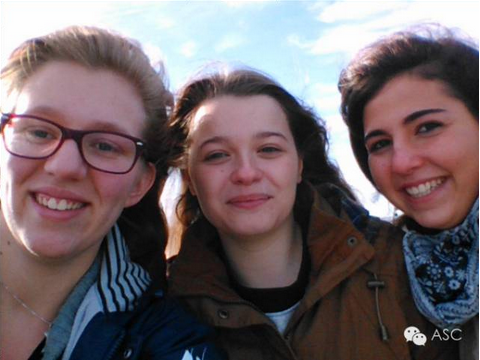
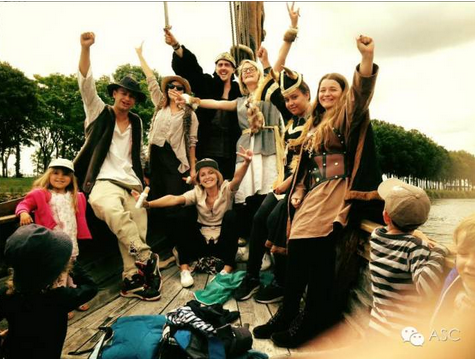
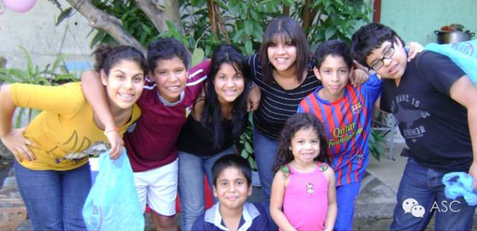

互惠动态
|
|
双语：老外盘点中美之间的六大文化差异
Living in a culture that is different from your own can be both an exciting and challenging experience. You have to learn different cultural practices and try to adapt to them. Following are the top six cultural differences between China and the US.
生活在一个和自己文化不同的社会里，可能是一个既令人兴奋、又充满挑战的经历。你必须了解不同文化的行为习惯，并且努力适应它们。以下是中国和美国之间的六点文化差异。
Chinese people do not have the same concept of privacy as Americans do. They talk about topics such as ages, income or marital status, which Americans think is annoying and intrusive.
中国人的隐私概念和美国人不同。中国人谈论年龄、收入、或者婚姻状况，而美国人则认为这些话题非常令人不快、具有侵入性。

In China, elders are traditionally treated with enormous respect and dignity while the young are cherished and nurtured. In America, the goal of the family is to encourage independence, particularly that of the children. Unlike the Chinese, older Americans seldom live with their children.
在中国，老人们通常都享有巨大的尊重和受尊崇的地位，而年轻一辈则被悉心呵护、培养。但是在美国，家庭的目标是鼓励独立，特别是孩子们。和中国人不同，美国老人很少和自己的孩子们住在一起。

Chinese people have different meanings to define friends. Just hanging out together time to time is not friendship. Friendship means lifelong friends who feel deeply obligated to give each other whatever help might seem required. Americans always call people they meet friends, so the definition of friends is general and different. There are work friends, playing friends, school friends and drinking friends.
中国人对朋友有不同的定义。只是经常一起出门玩的人不叫朋友。朋友是指那些永远觉得有义务向对方提供所需任何帮助的人。美国人经常称呼他们遇到的人为朋友，因此他们对朋友的定义很一般，并且各有不同。有工作的朋友，有一起玩的朋友，有学校的朋友，有喝酒的朋友。
As is well known, the Chinese like to save. They are always conservative when they are planning to spend money. It is different in the USA, where far fewer families are saving money for emergencies and education than their Chinese counterparts.
众所周知，中国人喜欢存钱。当计划花钱的时候中国人总是很保守。但是在美国则不同，和中国家庭相比，很少有美国家庭为紧急情况和教育存钱。
Chinese people value education and career more than Americans, who in turn put more emphasis on good character and faith.
中国人看重教育和事业，而美国人则更强调好品格和信仰。

Basically China values the community and the US values the individual. If you achieve something in the US, it’s because you were great. While in China, if you achieve something in China it’s because the team, or family, or company is great. Everything you do gets attributed to the greater whole, while in America individual merits are celebrated.
总的来说，中国更加看重集体，而美国则更看重个人。在美国，如果你取得了一些成就，那是因为你自己的功劳。但是在中国，如果你取得了一些成就，那会被归功于你的团队、家庭或者公司。在中国你所做的一切都归功于更大的集体，但是在美国则更加认可个人的功绩。